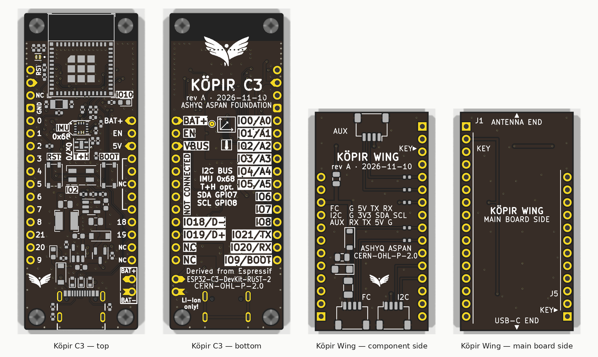

Ұшу контроллеріне арналған ESP32-C3 көпір-платасы және дрон кіріс-шығысына арналған қосымша плата.
Ashyq Aspan Foundation.
ESP32-C3 companion board for FPV / drone flight controllers, with a drone I/O add-on board.

| Файл / File | Мазмұны / Contents | Өлшемі / Size |
|---|---|---|
| kopir-c3-revA-jlcpcb.zip | Köpir C3: Gerber, BOM, CPL, схема PDF, STEP, ORDERING.txt | 1931 kB |
| kopir-wing-revA-jlcpcb.zip | Köpir Wing: Gerber, BOM, CPL, схема PDF, STEP, ORDERING.txt | 1508 kB |
| kopir-revA-source.zip | KiCad 9 жобалары, кітапханалар, скрипттер, құжаттар / KiCad 9 sources, libraries, scripts, docs (no git history) | 1938 kB |
| SHA256SUMS | бақылау сомалары / checksums | 0 kB |
| README.md | сипаттама, құрастыру, тапсырыс / description, assembly, ordering | 15 kB |
| NOTICE.md | шығу тегі және өзгерістер тізімі / origin and list of modifications | 6 kB |
| LICENSE-CERN-OHL | CERN-OHL-P-2.0 | 9 kB |
Köpir C3 — Espressif Systems / esp-rs жасаған ESP32-C3-DevKit-RUST-2 rev 2.0 платасының туындысы
(github.com/esp-rs/esp-rust-board), CERN-OHL-P-2.0.
Espressif пен esp-rs аттары тек шығу тегін көрсету үшін айтылады, олар бұл жобаны қолдамайды. Кепілдіксіз беріледі.
Derived from ESP32-C3-DevKit-RUST-2 rev 2.0 by Espressif Systems / esp-rs, CERN-OHL-P-2.0. Espressif and esp-rs are
named only to describe the origin of the design and do not endorse this project. Provided without warranty.